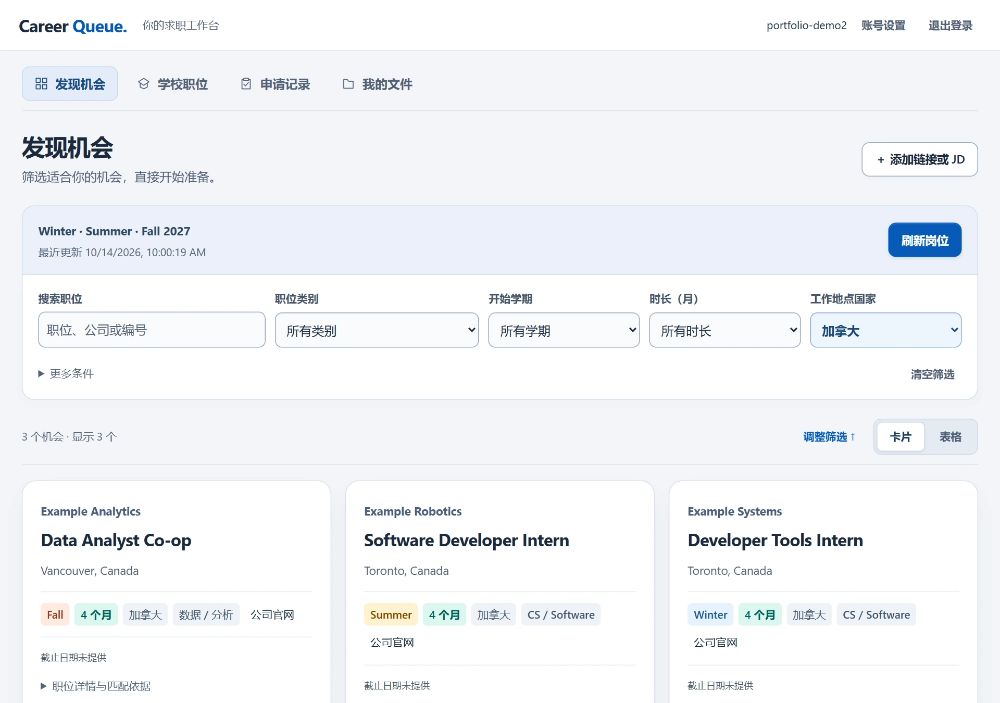

Personal project · 2026–present
Career Queue
Job opportunities arrive from different sources; Career Queue brings their records, evidence and application states into one review workspace.
MY CONTRIBUTION
- Directed requirements and acceptance checks for public ATS collection, deduplication and term parsing.
- Specified preview-and-confirm imports and separate school / employer states. Code generated with Codex; no automatic applications.
IMPLEMENTATION
View codeImplementation notes
Public ATS collection, normalization and deduplication use native Node HTTP, SQLite and vanilla JavaScript. School-detail capture is manual; imports require a preview and confirmation. School and employer application states are kept separate.